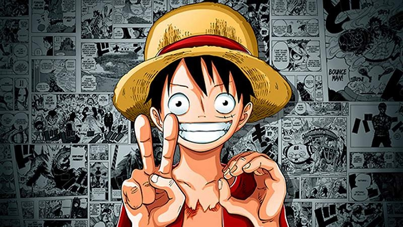
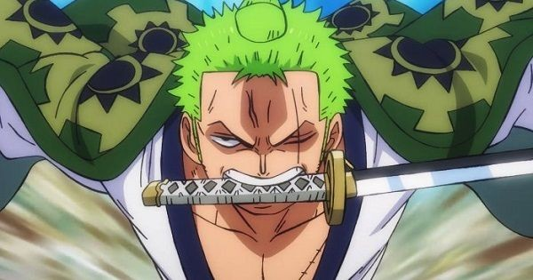
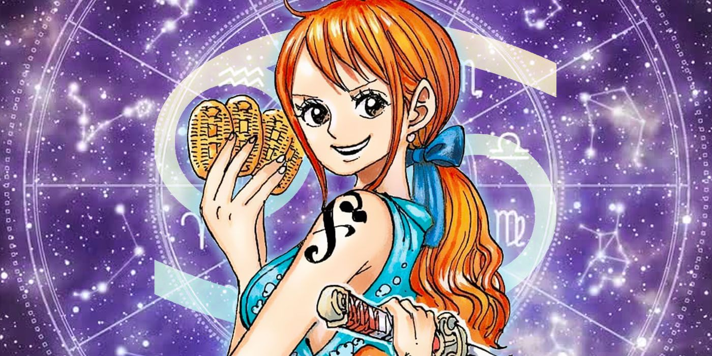
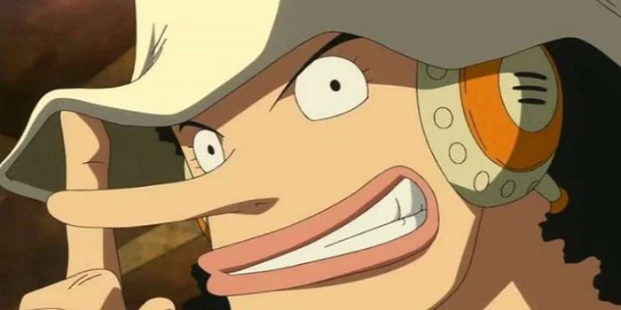

Monkey D Luffy
Alias: Topi Jerami, Manusia karet. Jabatan: Kapten. Tebusan/Bounty: ฿1.500.000.000 Deskripsi
Luffy memiliki cita-cita menjadi Raja Bajak Laut setelah bertemu dengan Shanks Si Rambut Merah yang singgah di pulau kelahirannya, Fusha. Topi jerami yang menjadi ciri khasnya adalah pemberian dari Shanks dan dia berjanji akan memberikan topi itu kembali kepadanya saat mereka bertemu kembali.
Luffy adalah pemakan buah iblis Gomu Gomu no Mi sehingga ia menjadi manusia karet. kemampuan ini membuat tubuhnya memiliki atribut yang sama dengan karet, seperti melar, peredam listrik, dsb.Ciri khas bertarungnya adalah menyerang dengan memanjangkan bagian tubuhnya. Semua nama jurusnya selalu diawali dengan kata "Gomu-gomu" dan kemudian diikuti dengan nama senjata atau artileri (contoh: 'Gomu Gomu no Pistol', 'Gomu Gomu no Bazooka', 'Gomu Gomu no Gatling', dll).
Hybrid: Gabungan dari Gear Second dan Gear Third. Kata "Shell" ditambahkan dalam nama jurusnya.
Roronoa Zoro
Alias: Pemburu Bajak Laut, Tiga Pedang. Jabatan:Petarung, Wakil Kapten. Tebusan/Bounty:฿320.000.000 Deskripsi
Merupakan kru pertama yang ikut bergabung dalam Kelompok Topi Jerami dan menjabat sebagai wakil kapten. Teknik bertarungnya menggunakan 3 pedang yang merupakan pedang langka dalam dunia One Piece. Zoro memiliki cita-cita untuk menjadi pendekar pedang terkuat di dunia, mewarisi cita-cita sahabat masa kecilnya, Kuina, yang meninggal karena kecelakaan.
Nami
Alias: Kucing Pencuri. Jabatan: Navigator. Tebusan/Bounty: ฿66.000.000 Deskripsi
Navigator dari Kelompok Topi Jerami yang dapat merasakan perubahan cuaca dengan tubuhnya. Kemampuan lain selain navigasi adalah mencuri dan membuat peta. Cita-cita dari Nami adalah membuat peta seluruh dunia. Senjata yang digunakan adalah tongkat dengan berbagai modifikasi dari Usopp.
Ussop
Alias: Hidung Panjang, Dewa Usopp, Soge King. Jabatan: Penembak Jitu. Tebusan/Bounty: ฿200.000.000 Deskripsi
Penembak jitu di Kelompok Bajak Laut Topi Jerami. Bercita-cita menjadi penembak jitu pemberani di seluruh lautan dan ingin pergi ke Pulau Elbaf. Ayahnya, Yasopp, adalah seorang penembak jitu di Kelompok Bajak Laut Shanks. Sangat suka berbohong, dan bercerita yang tinggi-tinggi. Bertarung dengan memakai tembakan katapel dengan peluru unik dan jebakan-jebakan. Setelah 2 tahun latihan mampu mengendalikan Pop Green, tumbuhan yang bisa tumbuh dengan agresif dan cepat. Di Arc Dressrosa Usopp mendapat kekuatan haki penglihatan, yang mana dia bisa melihat Sugar (anggota keluarga bajak laut Donquixote Doflamingo) ingin menyentuh Luffy dan Law dengan tujuan mengubah mereka menjadi mainan, dan dia bisa melihat jelas keberadaan Sugar dan menembakkan jebakan yang berisi gambar dirinya dengan mata dan lidah menjulur keluar. Menurut dirinya sendiri, dia termasuk 3 orang terlemah di kelompok, selain Nami dan Chopper. Usopp merupakan anggota yang sempat berselisih dengan Luffy di Arc Water 7 yang berakhir dengan duel antara Luffy vs Usopp di depan kapal Going Merry . Luffy memenangkan pertarungan dengan susah payah dan memutuskan untuk meninggalkan Usopp beserta Going Merry. Usopp secara 'resmi' keluar dari kelompok bajak laut topi jerami. Walaupun termasuk 3 terlemah, dia merupakan orang yang berani bertarung melawan sang kapten Monkey D. Luffy dan membakar bendera Pemerintah Dunia.